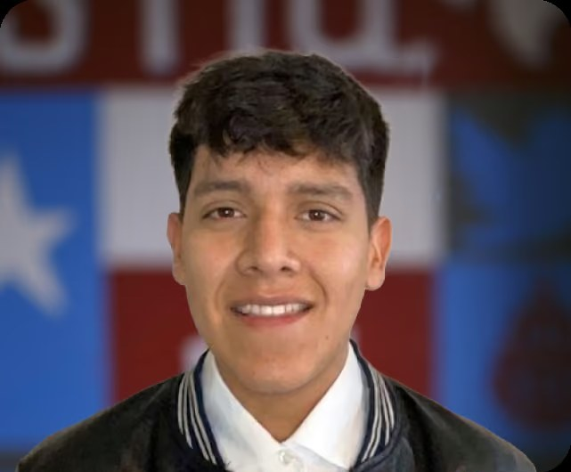

03 — Perfil
Perfil

Diseñador y editor de video en Miami. Hago contenido político que supera el millón de vistas, fotografía conciertos en vivo y diseño piezas deportivas para clubes y jugadoras del fútbol peruano.
Empecé como diseñador gráfico en Perú, en Digitalia TEC, Arturo's Burger y Soporte Total GUIMI. Ahí aprendí lo que pide el día a día: piezas para redes cada semana, fechas que no se mueven y clientes que necesitan resultados.
En el fútbol encontré mi lenguaje: matchdays, fixtures y piezas de jugador para Universitario, Sport Huancayo, Alianza Lima y la selección femenina. Collage, textura, tipografía gigante y una sola idea fuerte por afiche.
Hoy trabajo en Miami entre el video y la cámara. Edito campañas políticas que suman más de 1,3 millones de vistas y fotografío conciertos de MercyMe, Crowder y for KING & COUNTRY.
Recorrido
| Rol | Dónde | Cuándo |
|---|---|---|
| Video y diseño político | Campañas en EE. UU. | 2025 — hoy |
| Fotografía de conciertos | Giras en Florida | 2025 — hoy |
| Diseñador gráfico | Digitalia TEC · Perú | — |
| Diseñador gráfico | Arturo's Burger · Perú | — |
| Diseñador gráfico | Soporte Total GUIMI · Perú | — |
Herramientas
- Photoshop
- Illustrator
- Lightroom
- Premiere Pro
- After Effects
- Figma